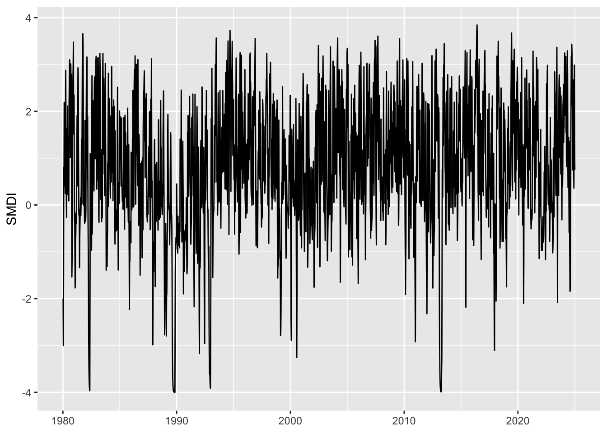

This chapter uses the gridded weather data from Chapter 4 to construct various metrics. Please refer to the 27 core ETCCDI Climate Change Indices (https://etccdi.pacificclimate.org/indices.shtml) for additional metrics that can be constructed.
All these metrics will be computed at the grid cell level, on the finest temporal scale. Aggregation at various levels (monthly, quarterly) to match with macroeconomic data will be performed once the indicators are created. Spatial aggregation will not be performed in this chapter.
library(tidyverse)
── Attaching core tidyverse packages ──────────────────────── tidyverse 2.0.0 ──
✔ dplyr 1.1.4 ✔ readr 2.1.5
✔ forcats 1.0.0 ✔ stringr 1.5.1
✔ ggplot2 3.5.2 ✔ tibble 3.3.0
✔ lubridate 1.9.4 ✔ tidyr 1.3.1
✔ purrr 1.1.0
── Conflicts ────────────────────────────────────────── tidyverse_conflicts() ──
✖ dplyr::filter() masks stats::filter()
✖ dplyr::lag() masks stats::lag()
ℹ Use the conflicted package (<http://conflicted.r-lib.org/>) to force all conflicts to become errors
library(corrplot)
corrplot 0.95 loaded
library(scales)
Attaching package: 'scales'
The following object is masked from 'package:purrr':
discard
The following object is masked from 'package:readr':
col_factor
library(zoo)
Attaching package: 'zoo'
The following objects are masked from 'package:base':
as.Date, as.Date.numeric
library(lubridate)
Let us load the graphs theme functions (See Chapter 1):
source("../scripts/functions/utils.R")
Let us also load the maps for the countries of interest (See Chapter 2)
load("../Data/Maps/GADM-4.1/maps_level_0.RData")
We focus on the following countries defined in Chapter 2:
We have daily precipitation \(P_t\), minimum temperatures \(\text{Tmin}_{t}\) and maximum temperatures \(\text{Tmax}_{t}\) at the grid cell level. We are interested in building a soil moisture index which requires to compute the evapotranspiration in a prior step. We follow the approach presented in Dingman (2015) (pp. 299–300, Box 6.8: Thornthwaite-Type Monthly Water-Balance Model) and recalled in Appendix S1 of Lutz, Wagtendonk, and Franklin (2010).
5.1.1 Potential Evapotranspiration
The daily PET (in mm/day) writes (assumed to be from Hamon (1964), but the article cannot be found on the Internet ; Dingman (2015) Eq. 6.68 p. 294): \[
\text{PET}_t =
\begin{cases}
0, & \text{if }\mathrm{Tmean}_t \le 0^\circ\mathrm{C},\\
29.8 \times \text{DL}_t \times \dfrac{e^\star(\mathrm{Tmean}_t)}{\mathrm{Tmean}_t + 273.2}, & \mathrm{otherwise},
\end{cases}
\tag{5.1}\]
where \(\text{DL}_t\) is the day length of day \(t\), expressed in hours and \(e^\star(\cdot)\) gives the saturation vapour pressure.
\(\text{Tmean}_t\) is the daily average temperature: \[
\mathrm{Tmean}_t = \frac{\mathrm{Tmin}_t + \mathrm{Tmax}_t}{2}.
\tag{5.2}\]
How to compute day length \(\text{DL}_t\)?
The methodology to compute day length is given in Appendix D of Dingman (2015). It writes:
where \(\omega_s\) (in radians) is the sunrise hour angle. At sunrise and sunset, the solar zenith angle \(\theta_z\) equals \(90^\circ + h_0\), where \(h_0\) is the apparent altitude of the Sun’s center at sunrise. The sunrise hour angle \(\omega_s\) satisfies: \[
\cos(\omega_s) = \dfrac{\sin(h_0) - \sin(\Lambda) \sin(\delta)}{\cos(\Lambda) \cos(\delta)},
\tag{5.4}\] with \(\Lambda\) the latitude (in radians), \(\delta\) the solar declination (in radians) and \(h_0 \approx -0.833^\circ\).
The solar declination in radians writes (Campbell and Norman (1998)): \[
\sin^{-1}(0.39795 \times \cos(0.2163108 + 2 \tan^{-1}(0.9671396 \times \tan(0.0086 \times (\text{doy}_t - 186))) ))
\tag{5.5}\]
How to compute saturation vapour pressure \(e^\star(T)\)?
The saturation vapour pressure \(e^\star(\cdot)\) (in k pascals) is given, for a temperature \(T\) (in °C), by (Dingman (2015), Box 2.2 p.99): \[
e^\star(T) = 0.611 \exp\left(\frac{17.27\times T}{T + 237.3}\right)
\tag{5.6}\]
Let us compute the daily potential evapotranspiration in R. We define two functions:
decl_angle(), which computes the solar declination in radians for a given day-of-year (the code is from {TrenchR}),
daylength_hours(), which computes the day length (in hours) for a given day-of-year, at a given latitude.
The decl_angle() function.
#' @title Solar Declination in Radians (from {TrenchR})#' #' @description The function calculates solar declination, which is the angular #' distance of the sun north or south of the earth's equator, based on the day #' of year (Campbell and Norman, 1998)#' #' @param doy Day of year (1-366).#' #' @returns The declination angle (in radians).#'#' @references#' Campbell GS, Norman JM (1998). Introduction to environmental biophysics, #' 2nd ed. edition. Springer, New York. ISBN 0387949372.decl_angle <-function (doy) { doy <- (doy -1) %%365+1 rev_ang <-0.2163108+2*atan(0.9671396*tan(0.0086* (doy -186))) asin(0.39795*cos(rev_ang)) }
The daylength_hours() function.
#' Day length (in hours)#' #' @param lat_deg Latitude (in degrees)#' @param doy Day of year (1-366).#' daylength_hours <-function(lat_deg, doy) { lambda <- lat_deg * pi /180 delta <-decl_angle(doy) h0 <--0.833* pi /180# apparent sunrise altitude# General sunrise equation with altitude:# cos(ws) = (sin(h0) - sin(lambda) sin(delta)) / (cos(lambda) cos(delta)) num <-sin(h0) -sin(lambda) *sin(delta) den <-cos(lambda) *cos(delta) cos_ws <- num / den cos_ws <-pmin(pmax(cos_ws, -1), 1) # clamp to [-1,1] ws <-acos(cos_ws) (24/pi) * ws}
The equation for soil water balance depends on whether water input (\(W_t\)) exceeds potential evapostranspiration (Lutz, Wagtendonk, and Franklin (2010)):
where \(\Delta_{\text{soil},t}\) is the fraction removed from storage: \[
\Delta_{\text{soil},t} = \text{SW}_{t-1} \times\left( 1 - \exp\left(-\dfrac{\text{PET}_t - W_t}{S_\text{max}}\right)\right),
\tag{5.8}\]
\(S_{\text{max}}\) is the soil water-holding capacity in the top 200 cm of the soil profile. Ideally, this should be given from recorded values. We do not have this here, so we will use a value of 150mm:
The current NIWA water balance model uses a fixed soil moisture capacity of 150 mm of water, based on a typical loam soil. https://niwa.co.nz/sites/default/files/NZDI_more_info.pdf (New Zealand Drought Index and Drought Monitor Framework).
The deficit writes: \[
D_t = \text{PET}_t - \text{AET}_t.
\]
How to compute water input \(W_t\) with daily data?
Daily snowmelt is often estimated using a degree-day approach, which assumes that melt is proportional to the number of degrees by which air temperature exceeds a threshold (typically 0°C). This formulation applies only to the existing snowpack, ensuring that snow deposited on a given day cannot melt immediately.
Following the standard degree-day formulation (Dingman (2015), Eq. 5.71), the daily snowmelt is written as a linear function of air temperature: \[
\text{Melt}_t = \min\left\{\text{DDF} \times \max(\mathrm{Tmean}_t - T_0,\, 0),\, \text{Pack}_{t-1}\right\}
\tag{5.9}\]
where \(\text{DDF}\) is the degree-day factor (mm day\(^{-1}\)°C\(^{-1}\)), typically in the range 2–5 mm day\(^{-1}\)°C\(^{-1}\) depending on snow properties and surface conditions. The parameter \(T_0\) is the threshold temperature for melting (which is always set as 0°C). \(\mathrm{Tmean}_t\) is the daily mean air temperature (see Equation 5.13). \(\text{Pack}_{t-1}\) is the snow water equivalent remaining from the previous day.
The snowpack evolves according to the mass balance: \[
\text{Pack}_t = \text{Pack}_{t-1} + \text{Snow}_t - \text{Melt}_t.
\]
The snow pack equation is recursive. We simply set the start value at 0 for the first date of the sequence of values within a cell.
\(\text{Snow}_t\) is the amount of snow, which is the amount of precipitation if the average daily temperature is lower or equal to \(T_0\), and 0 otherwise: \[
\text{Snow}_t = \begin{cases}
P_t, & \text{if } T_{\text{mean}_t} \leq T_0 \\
0, & \text{otherwise}.
\end{cases}
\tag{5.10}\]
Conversely, the amount of rain is defined as: \[
\text{Rain}_t = \begin{cases}
P_t, & \text{if } T_{\text{mean}_t} > T_0 \\
0, & \text{otherwise}.
\end{cases}
\tag{5.11}\]
The total water input to the soil becomes: \[
W_t = \text{Rain}_t + \text{Melt}_t.
\]
How to compute water input \(W_t\) with monthly data?
Melt Factor and Rain/Snow Partition
The monthly precipitation can be divided into a rain fraction \(\text{Rain}_t\) and a snow fraction \(\text{Snow}_t\). To do so, we define the melt factor \(F_t\): \[
F_t = \begin{cases}
0, & \text{if }\text{Tmean}_t \leq 0^\circ,\\
0.167 \times \text{Tmean}_t, & \text{if } 0^\circ <\text{Tmean}_t \leq 6^\circ,\\
0, & \text{if }\text{Tmean}_t > 6^\circ.
\end{cases}
\tag{5.12}\]
where \(\text{Tmean}_t\) is the daily average temperature: \[
\mathrm{Tmean}_t = \frac{\mathrm{Tmin}_t + \mathrm{Tmax}_t}{2}.
\tag{5.13}\]
The rain and snow fractions can then be computed as follows: \[
\begin{align}
\text{Rain}_t & = F_t \times P_t\\
\text{Snow}_t & = (1 - F_t) \times P_t
\end{align}
\tag{5.14}\]
Recursive Snowpack and Melt
The melt factor \(F_t\) is also used to define snowmelt \(\text{Melt}_t\): \[
\text{Melt}_t = F_t \times (\text{Snow}_t + \text{Pack}_{t-1}),
\tag{5.15}\]
where snow pack for a given day is given by: \[
\text{Pack}_t = (1 - F_t)^2 \times P_t + (1 - F_t) \times \text{Pack}_{t-1}
\tag{5.16}\]
The snow pack equation is recursive. We simply set the start value at 0 for the first date of the sequence of values within a cell.
The monthly water input to the soil is obtained as: \[
W_t = \text{Rain}_t + \text{Melt}_t
\tag{5.17}\]
# This code is not evaluated here since we use daily datacountry_weather_daily <- country_weather_daily |>mutate(# Monthly melt factor and rain/snow splitmelt_factor =case_when( temp_mean <=0~0, temp_mean >=6~1,TRUE~0.167* temp_mean ),rain = melt_factor * precip,snow = (1- melt_factor) * precip ) |>arrange(cell_id, date) |>group_by(cell_id) |># Monthly snowpack recursion and meltmutate(a =1- melt_factor,b = (a^2) * precip, # term added each dayc = a, # multiplier on previous packpack = { init <-0# initial PACK for this cell_id# pack_t = b_t + c_t * pack_{t-1} out <- purrr:::accumulate2( b, c,.init = init,.f =function(bi, ci, prev) bi + ci * prev )as.numeric(tail(out, -1)) # drop the initial value },pack_lag =lag(pack, default =0),melt = melt_factor * (snow + pack_lag),water_input = rain + melt ) |>ungroup() |>select(-a, -b, -c)
Then, we can compute soil water balance (\(\text{SW}_t\)), actual evapotranspiration (\(\text{AET}_t\)) and soil water deficit \(D_t\).
We define the update_soil_water_deficit() function that computes those values for a subset of observation corresponding to a cell, using the following input variables: \(W_t\), \(\text{PET}_t\), \(\text{SW}_{t-1}\) and \(S_{\text{max}}\).
The update_soil_water_deficit() function.
#' Compute Soil Water Deficit#' #' @param W Water input to the system (in mm).#' @param PET Potential evapotranspiration (in mm).#' @param S_prev Soil water balance in previous period (in mm).#' @param S_max Soil water-holding capacity in the top 200cm of the soil #' profile (in mm).#' #' @returns A list with the following elements:#' - `S_new`: soil water balance,#' - `AET`: evapotranspiration,#' - `surplus`: water surplus,#' - `deficit`: water deficit#' update_soil_water_deficit <-function(W, PET, S_prev, S_max) {if (W >= PET) {# Water-abundant day: recharge first, overflow = surplus S_star <- (W - PET) + S_prev# New value for soil water balance S_new <-min(S_star, S_max) AET <- PET # Evapotranspiration surplus <-max(0, S_star - S_max) deficit <-0 } else {# Water-limited day: exponential draw from storage (Dingman/Lutz Eq. 13) D <- PET - W # unmet demand by inputs dSOIL <- S_prev * (1-exp(-D / S_max)) # fraction removed from storage# New value for soil water balance S_new <- S_prev - dSOIL AET <- W + dSOIL # Evapotranspiration surplus <-0 deficit <- PET - AET }list(S_new = S_new, # Soil water balanceAET = AET, # Evapotranspirationsurplus = surplus, # Water surplusdeficit = deficit # Water deficit )}
We use that function on subsets of the dataset where each subset corresponds to a cell.
# Note: this chunk takes about 3 minutes to run.# It is not evaluated here during compilation.if (!file.exists("NZL_temprary_water_deficit.rda")) {# Ideally, we would need to use a value at the cell level. Smax_default <-150 country_weather_daily <- country_weather_daily |>arrange(cell_id, date) |>group_by(cell_id) |># Prepare new columnsmutate(AET =NA_real_, # Evapostranspirationsoil_moisture =NA_real_, # Water storagesoil_surplus =NA_real_, # Water surplussoil_deficit =NA_real_# Water deficit ) |># For each cell, compute soil water deficit recursivelygroup_modify(\(tb, key){ n <-nrow(tb) S <-0.5* Smax_defaultfor (i inseq_len(n)) { u <-update_soil_water_deficit(W = tb$water_input[i],PET = tb$PET_daily[i],S_prev = S,S_max = Smax_default ) tb$AET[i] <- u$AET tb$soil_moisture[i] <- u$S_new tb$soil_surplus[i] <- u$surplus tb$soil_deficit[i] <- u$deficit S <- u$S_new } tb }) |>ungroup()save( country_weather_daily, file ="NZL_temprary_water_deficit.rda" )} else {load("NZL_temprary_water_deficit.rda")}country_weather_daily
The Soil Moisture Deficit Index (SMDI, see Narasimhan and Srinivasan (2005)), turns daily soil water storage into a weekly drought/wetness index which takes values on \([-4,4]\) and which is comparable across locations and seasons. Negative values indicate dry conditions whereas positive values indicate wet conditions.
Since we have daily observation, we need to compute weekly values for soil moisture. We assign each day to one of 52 fixed 7-day blocks starting on January 1: \[
\text{week} = \min\left(\left\lfloor\frac{\text{yday}-1}{7}\right\rfloor + 1,\ 52\right).
\] Note that we do not use the week() function from {lubridate} to avoid ISO weeks (which can have 53).
Then, for each grid cell (i), year (y), and week (w), compute the weekly mean available soil water: \[
\mathrm{SW}_{i,y,w} = \frac{1}{n_{i,y,w}} \sum_{t \in (i,y,w)} \text{SW}_t,
\tag{5.18}\]
where \(\text{SW}_t\) is the soil water balance (in mm), previously computed (see Equation 5.7).
We define a function, find_wday() which assigns a fixed 7-day “week” indice (1 to 52) to calendar dates.
#' Assign fixed 7-day "week" indices (1–52) to calendar dates#'#' @description#' Divides each year into 52 fixed 7-day blocks, starting on January 1#' (block 1 = days 1–7, block 2 = days 8–14, ...#' Any remaining day(s) beyond day 364 (e.g., Dec 31 in common years,#' or Dec 30–31 in leap years) are assigned to week 52.#'#' @param x A `Date` vector.#' @returns#' An integer vector of the same length as `x`, giving week indices in `1:52`.#' find_wday <-function(x) {pmin(((yday(x) -1) %/%7) +1, 52)}
# First assign each day to one of the 52 weekscountry_weather_daily <- country_weather_daily |>mutate(# week = lubridate::week(date) # includes 53...week =find_wday(date) )# Then compute the average availabe soil water at the cell levelsw_weekly <- country_weather_daily |>group_by(cell_id, year, week) |>summarise(SW =mean(soil_moisture, na.rm =TRUE), .groups ="drop")
The long-term weekly statistics at the cell level then need to be computed:
\(\text{MSW}_{i,w}\): the median of \(\text{SW}_{i,y,w}\) over a long period (the entire sample, here),
\(\text{SW}_{\text{min},i,w}\): the min of \(\text{SW}_{i,y,w}\) over the same long period.
\(\text{SW}_{\text{max},i,w}\): the max of \(\text{SW}_{i,y,w}\) over the same long period.
The weekly soil-water anomaly are then computed, in percent. For each (cell, year, week), a piecewise, range-normalized anomaly is computed as follows: \[
\text{SD}_{i,y,w} =
\begin{cases}
100 \dfrac{\text{SW}_{i,y,w} - \text{MSW}_{i,w}}{\text{MSW}_{i,w}-\text{SW}_{\min,i,w}}, & \text{if } \text{SW}_{i,y,w} \le \text{MSW}_{i,w},\\
100 \dfrac{\text{SW}_{i,y,w} - \text{MSW}_{i,w}}{\text{SW}_{\max,i,w}-\mathrm{MSW}_{i,w}}, & \text{otherwise}
\end{cases}
\tag{5.19}\]
Weekly soil water anomalies \(\text{SD}_{i,y,w}\) will be negative when they are drier than the median for that week, positive when wetter, and naturally scaled by the local weekly climatological range.
You may have notice that in the previous code, the denominator is ‘protected’ with a tiny value (\(10^{-9}\)) to avoid division by zero in flat climates.
The last step consists in computing the SMDI in a recursive manner: the SMDI carries persistence via a first-order recursion within each calendar year: \[
\begin{align*}
\text{SMDI}_{i,y,1} & = \frac{\text{SD}_{i,y,1}}{50},\\
\text{SMDI}_{i,y,w} & = 0.5,\text{SMDI}_{i,y,w-1} + \frac{\text{SD}_{i,y,w}}{50}\quad (w\ge 2).
\end{align*}
\tag{5.20}\]
# SMDI computed recursively, by cell.smdi_weekly <- sw_anom |>arrange(cell_id, year, week) |>group_by(cell_id, year) |>group_modify(\(tb, key) { n <-nrow(tb) smdi <-numeric(n)for (i inseq_len(n)) {if (i ==1||is.na(smdi[i-1])) {# Initial value smdi[i] <- tb$SD[i] /50 } else { smdi[i] <-0.5* smdi[i-1] + tb$SD[i] /50 } } tb$SMDI <- smdi tb }) |>ungroup()
Let us have a look at the values for a cell:
ggplot(data = smdi_weekly |>filter(cell_id ==19) |>mutate(x = year + week/52),mapping =aes(x = x, y = SMDI)) +geom_line() +labs(x =NULL)
Figure 5.1: SMDI for a cell in New Zealand. Weekly values range from -4 to +4 indicating very dry to very wet conditions.

5.3.1 Monthly Aggregation
The SMDI values are computed on a weekly basis (52 fixed 7-day blocks per year). To align with standard reporting periods of macroeconomic data, we can aggregate these values to the monthly scale. Because some 7-day weeks span two months, we need to ensure that each month receives only the appropriate share of each week.
We proceed as follows:
We build a monthly calendar of overlaps. For every combination of year and month present in the data, we compute how many days of each fixed 7-day week fall within that month. This gives us a set of weights (\(w^{(m)}_{w}\)) that indicate the fraction of the month covered by each week. The weights for a given month always sum to 1.
We compute weighted monthly SMDI values. We join the weights from the previous step with the weekly SMDI observations and compute, for each grid cell, year, and month, a weighted mean of weekly SMDI values: \[
\mathrm{SMDI}_{m} = \frac{\sum_{w} \mathrm{SMDI}_{w} \times w^{(m)}_{w}}{\sum_{w} w^{(m)}_{w}},
\] where (\(w^{(m)}_{w}\)) is the proportion of the month accounted for by week (w).
We define a function, get_month_week_cal(), to get a monthly calendar of overlaps. Note that it relies on the find_wday() function previously defined.
#' Calendar of fixed 7-day "weeks" (1--52) overlapped with a given month#'#' @description#' Builds the 52 fixed 7-day blocks for a given year#' (block 1 starts on Jan 1, block k starts on Jan 1 + 7*(k-1) days),#' computes each block's overlap (in days) with the specified month,#' and returns per-block weights equal to overlap / days-in-month.' #' #' @param year Year (numeric).#' @param month Month (numeric).#' #' @returns#' A tibble with one row per overlapping block and columns:#' - `year`: the requested year,#' - `month`: the requested month,#' - `week`: fixed 7-day block index in 1...52,#' - `weight_ndays`: overlap days over days in the month.#' get_month_week_cal <-function(year, month) { m_start <- lubridate::make_date(year, month, 1) m_end <- (m_start %m+%months(1)) - lubridate::days(1)# days in the month dates <-seq(lubridate::ymd(m_start), lubridate::ymd(m_end), by ="day") weeks <-sapply(dates, find_wday) ndays_weeks <-tapply(weeks, weeks, length) dplyr::tibble(week =as.integer(names(ndays_weeks)),nb_days =as.integer(ndays_weeks),weight_ndays = nb_days /sum(nb_days) ) |> dplyr::mutate(year = year,month = month,.before =1L )}
We get the calendar of months for monthly aggregations by applying the get_month_week_cal() function to all the (year, month) covering the sample period:
We then proceed to the second step, where we compute the monthly aggregated values for SMDI:
smdi_monthly <- smdi_weekly |>left_join( months_cal, by =c("year", "week"),relationship ="many-to-many" ) |>group_by(cell_id, year, month) |>summarise(# If any missing values in SMDI will lead to NAsSMDI_month =weighted.mean(SMDI, w = weight_ndays),.groups ="drop" )
Let us have a look at the values for a cell:
ggplot(data = smdi_monthly |>mutate(date = year + month /12) |>filter(cell_id ==19),mapping =aes(x = date, y = SMDI_month) ) +geom_line() +labs(x =NULL, y ="SMDI")
Figure 5.2: Monthly SMDI values for a cell in New Zealand. Weekly values range from -4 to +4 indicating very dry to very wet conditions.
5.3.2 Quarterly Aggregation
We may want to aggregate the SMDI values at the quarterly level (Q1–Q4). We follow the same logic as for monthly aggregation, adapting it to quarters:
We first build a quarterly calendar of overlaps. For each year and quarter, we determine how many days of each 7-day week fall within the quarter. This yields a set of weights (\(w^{(q)}_w\)) expressing the fraction of the quarter represented by each week. The weights for a given quarter always sum to 1.
We then compute weighted quarterly SMDI values. Using these weights, we aggregate the weekly SMDI values within each quarter by taking a weighted average, where each week’s contribution is proportional to the number of days it contributes to that quarter: \[
\mathrm{SMDI}_{q} = \frac{\sum_{w} \mathrm{SMDI}_{w} \times w^{(q)}_{w}}{\sum_{w} w^{(q)}_{w}},
\] where (\(w^{(q)}_{w}\)) denotes the proportion of the quarter accounted for by week (w).
The get_quarter_week_cal() function creates the quarterly calendar of overlaps. Again, note that it relies on the find_wday() function previously defined.
#' Calendar weights for fixed 7-day "weeks" (1–52) within a given quarter#'#' @description#' For a given `year` and `quarter`, this function computes the number of days#' from each fixed 7-day block (weeks 1–52, defined from January 1 in 7-day#' increments) that fall within that quarter, along with their normalized#' weights. Any remaining days beyond day 364 (e.g., Dec 31 in common years,#' or Dec 30–31 in leap years) are assigned to week 52.#' #' @param year Year (numeric).#' @param quarter Quarter (numeric).#' #' @returns#' A tibble with one row per overlapping block and columns:#' - `year`: the requested year,#' - `quarter`: the requested quarter,#' - `week`: fixed 7-day block index in 1...52,#' - `weight_ndays`: overlap days over days in the quarter.#' get_quarter_week_cal <-function(year, quarter) { q_start <- lubridate::make_date(year, (quarter -1) *3+1, 1) q_end <- (q_start %m+%months(3)) - lubridate::days(1) dates <-seq(q_start, q_end, by ="day") weeks <-find_wday(dates) ndays_quarter <-tapply(weeks, weeks, length) dplyr::tibble(week =as.integer(names(ndays_quarter)),nb_days =as.integer(ndays_quarter),weight_ndays = nb_days /sum(nb_days) ) |> dplyr::mutate(year = year,quarter = quarter,.before =1L )}
We then proceed to the second step, where we compute the quarterly aggregated values for SMDI:
smdi_quarterly <- smdi_weekly |>left_join( quarters_cal, by =c("year", "week"),relationship ="many-to-many" ) |>group_by(cell_id, year, quarter) |>summarise(# If any missing values in SMDI will lead to NAsSMDI_quarter =weighted.mean(SMDI, w = weight_ndays),.groups ="drop" )
Let us have a look at the values for a cell:
ggplot(data = smdi_quarterly |>mutate(date = year + quarter /4) |>filter(cell_id ==19),mapping =aes(x = date, y = SMDI_quarter) ) +geom_line() +labs(x =NULL, y ="SMDI")
Figure 5.3: Quarterly SMDI values for a cell in New Zealand. Quarterly values range from -4 to +4 indicating very dry to very wet conditions.
5.4 Standardized Precipitation-Evapotranspiration Index (SPEI)
We will compute the Standardized Precipitation-Evapotranspiration Index (SPEI), a versatile drought index that uses climatic data to assess the onset, duration, and severity of drought conditions compared to normal conditions Vicente-Serrano, Beguería, and López-Moreno (2010). The SPEI index relies on the precipitation levels and potential evapotranspiration (estimated in Section 5.1).
The SPEI requires:
Monthly precipitation \(P_m\) and monthly potential evapotranspiration \(\text{PET}_m\) as inputs,
Water balance: \(D_m = P_m - \text{PET}_m\),
A scale \(k\), usually in \(\{1,2,3,6,12,24\}\), which defines the width (in months) for rolling accumulations. This scale thus controls for the magnitude of the memory,
A calibration window (we will use 1981–2010).
Table 5.1: SPEI values and corresponding climate conditions.
SPEI
Climate condition
SPEI \(\geq\) 2.0
Extremely wet
1.5 \(\leq\) SPEI < 2.0
Severely wet
1.0 \(\leq\) SPEI < 1.5
Moderately wet
0.5 < SPEI < 1.0
Mildly wet
−0.5 \(\leq\) SPEI \(\leq\) 0.5
Normal
−1.0 < SPEI < −0.5
Mildly dry
−1.5 < SPEI \(\leq\) −1.0
Moderately dry
−2.0 < SPEI \(\leq\) −1.5
Severely dry
SPEI \(\leq\) −2.0
Extremely dry
First, we need to compute monthly aggregation of required weather variables, at the grid cell level.
#' Compute Standardized Precipitation-Evapotranspiration Index (SPEI)#' #' @description#' Computes the Standardized Precipitation–Evapotranspiration Index (SPEI)#' at multiple temporal scales from a monthly climatic water balance time series.#'#' @param df A data frame containing at least the following columns:#' - `ym`: a `Date` or `yearmon`-like variable indicating the month,#' - `year`: numeric year of each observation,#' - `balance`: the monthly climatic water balance, typically #' P - PET (precipitation minus potential evapotranspiration), in millimetres (mm).#' @param scales A numeric vector giving the accumulation periods (in months) #' for which the SPEI is computed. Default to `c(1, 3, 6, 12)`.#' @param ref_start Optional numeric vector of length 2 giving the start year #' and month (e.g., `c(1981, 1)`) of the reference calibration period. #' If `NULL`, the full series is used.#' @param ref_end Optional numeric vector of length 2 giving the end year #' and month (e.g., `c(2010, 12)`) of the reference calibration period. #' If `NULL`, the full series is used.#'#' @details#' For each accumulation period `k` in `scales`, the function:#' 1. Builds a monthly time series (`ts`) of the climatic water balance with #' frequency 12. #' 2. Fits the [SPEI::spei()] model for the given scale `k`. #' 3. Extracts the standardized fitted values. #'#' The output includes one column per computed scale, named `SPEI_k`, #' where `k` is the accumulation period (e.g., `SPEI_3` for 3-month SPEI). #'#' @returns#' A tibble with one row per input observation and the following columns:#' - `ym`: corresponding month. #' - `SPEI_k`: standardized SPEI values for each scale `k`. #' compute_spei <-function(df, scales =c(1, 3, 6, 12),ref_start =NULL, ref_end =NULL) {# Build a ts object for water balance with frequency = 12 start_year <-min(df$year, na.rm =TRUE) start_month <-month(min(df$ym, na.rm =TRUE)) bal_ts <-ts(df$balance, start =c(start_year, start_month), frequency =12)# Run SPEI for each scale spei_list <-lapply(scales, function(k) {if (is.null(ref_start) ||is.null(ref_end)) { fit <- SPEI::spei(bal_ts, scale = k, verbose =FALSE) } else { fit <- SPEI::spei( bal_ts, scale = k, ref.start = ref_start, ref.end = ref_end,verbose =FALSE ) }# Extract the fitted standardized values as a numeric vector spei_values <-as.numeric(fit$fitted)tibble(!!paste("SPEI", k, sep ="_") := spei_values ) })bind_cols(spei_list) |>mutate(ym = df$ym, .before =1L)}
The reference period will be Jan. 1981 to Dec. 200.
# A tibble: 540 × 5
ym SPEI_1 SPEI_3 SPEI_6 SPEI_12
<date> <dbl> <dbl> <dbl> <dbl>
1 1980-01-01 0.457 NA NA NA
2 1980-02-01 -0.0726 NA NA NA
3 1980-03-01 -0.0889 0.0265 NA NA
4 1980-04-01 -1.74 -0.917 NA NA
5 1980-05-01 0.271 -0.820 NA NA
6 1980-06-01 -0.145 -0.836 -0.582 NA
7 1980-07-01 0.351 0.142 -0.567 NA
8 1980-08-01 0.791 0.333 -0.351 NA
9 1980-09-01 0.310 0.579 -0.227 NA
10 1980-10-01 -0.810 0.117 0.0809 NA
# ℹ 530 more rows
Check whether there are infinite values in the resulting values. If that is the case, consider a wider reference period.
The compute_spei() function is then applied to each cell.
Figure 5.5: Quarterly mean of SPEI for a cell in New Zealand, depending on the accumulation periods (\(k\)). Shaded zones represent climatic conditions by SPEI range
5.5 Temporal Aggregation
We now need to gather the different datasets together. As for the SMDI, we will consider a monthly and a quarterly aggregation.
5.5.1 Monthly Data
First, we compute the total amount of precipitation, the average minimum, maximum, and mean temperatures, at the cell-level, on a monthly basis.
Campbell, Gaylon S., and John M. Norman. 1998. “Introduction.” In An Introduction to Environmental Biophysics, 1–13. Springer New York. https://doi.org/10.1007/978-1-4612-1626-1_1.
Dingman, S. Lawrence. 2015. Physical Hydrology. Waveland press.
Hamon, W. R. 1964. “Computation of Direct Runoff Amounts from Storm Rainfall” 63: 52–62.
Lutz, James A., Jan W. van Wagtendonk, and Jerry F. Franklin. 2010. “Climatic Water Deficit, Tree Species Ranges, and Climate Change in Yosemite National Park.”Journal of Biogeography 37 (5): 936–50. https://doi.org/10.1111/j.1365-2699.2009.02268.x.
Narasimhan, B., and R. Srinivasan. 2005. “Development and Evaluation of Soil Moisture Deficit Index (SMDI) and Evapotranspiration Deficit Index (ETDI) for Agricultural Drought Monitoring.”Agricultural and Forest Meteorology 133 (1–4): 69–88. https://doi.org/10.1016/j.agrformet.2005.07.012.
Vicente-Serrano, Sergio M., Santiago Beguería, and Juan I. López-Moreno. 2010. “A Multiscalar Drought Index Sensitive to Global Warming: The Standardized Precipitation Evapotranspiration Index.”Journal of Climate 23 (7): 1696–1718. https://doi.org/10.1175/2009jcli2909.1.